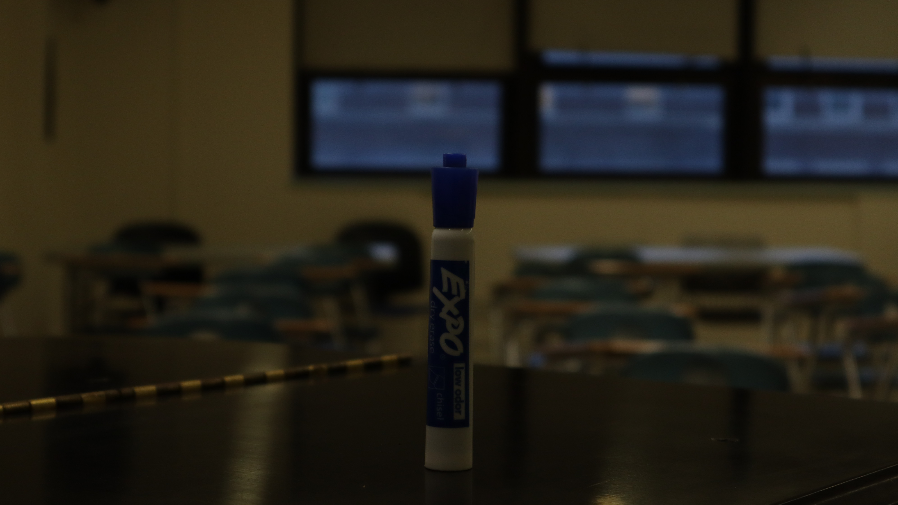
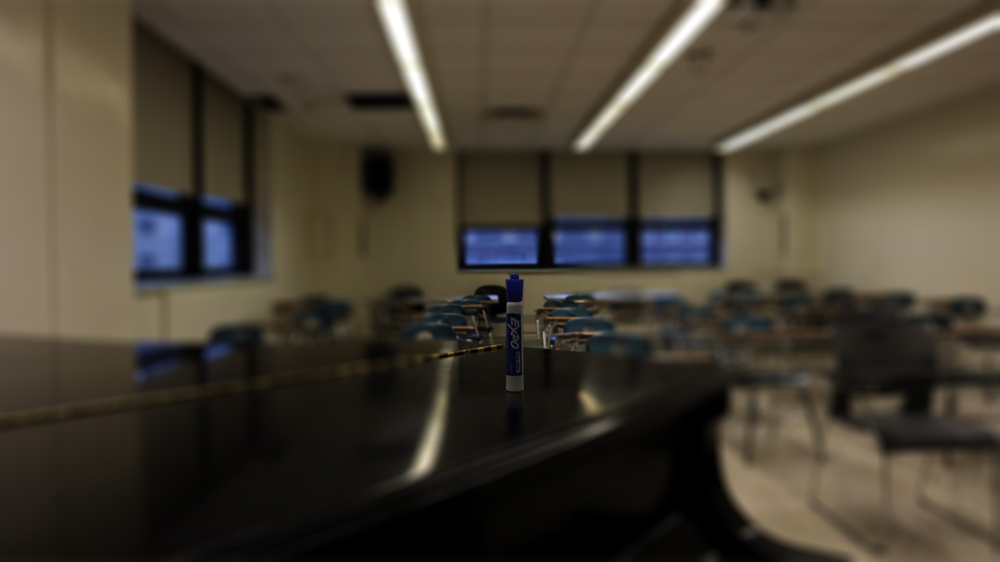

Here I got the beautiful subject of a marker! Got a bit too anxious trying to ask a random person to be a subject but I don't think the assignment specified needing a human subject, at least I hope so ;-;. First time I borrowed the camera I kinda just sat in the media room after I tried asking once but everyone said no, just unlucky i suppose, but weird request to just ask random people for a picture especially when you are fiddling around lost with settings.
Here is the first image for Homework 3:
Although I think I used the same settings as the first one I feel like the colors and exposure look very different. Maybe I just messed up some settings on the camera, oopsieeee.
Here is the second image for Homework 3:

Not proud of this one but I needed to finish this homework as its almost 2am and I can't access LinkedIn Learning at the moment so youtube tutorial it is.
Here is the third image edited for Homework 3:
